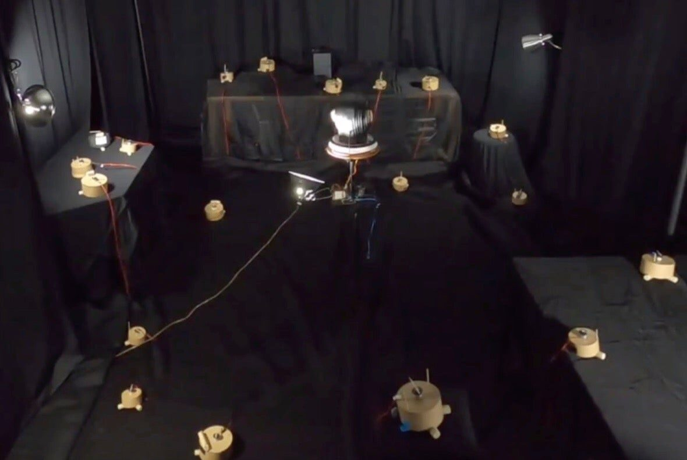
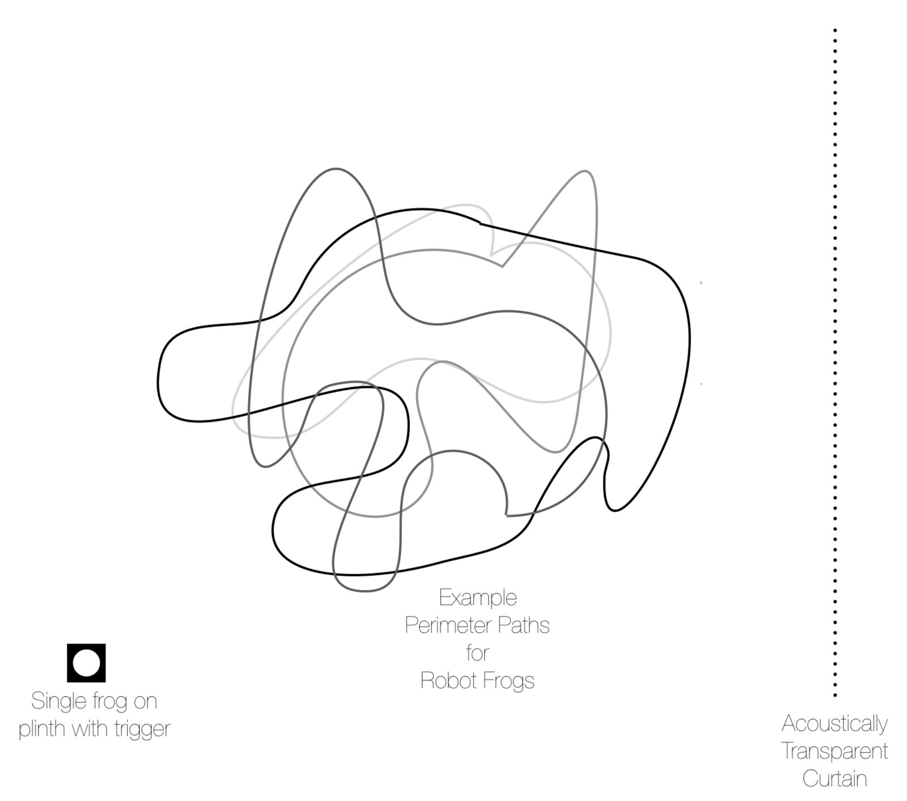

RhumbLine: Plectrohyla Exquisita --- Spatial Listening of Zoomorphic Musical Robots
Abstract
Contending with ecosystem silencing in the Anthropocene, RhumbLine: Plectrohyla Exquisita is an installation-scale instrument featuring an ensemble of zoomorphic musical robots that generate an acoustic soundscape from behind an acousmatic veil, highlighting the spatial attributes of acoustic sound. Originally conceived as a physical installation, the global COVID-19 pandemic catalyzed a reconceptualization of the work that allowed it to function remotely and collaboratively with users seeding robotic frog callers with improvised rhythmic calls via the internet—transforming a physical installation into a web-based performable installation-scale instrument. The performed calls from online visitors evolve using AI as they pass through the frog collective. After performing a rhythm, audiences listen ambisonically from behind a virtual veil and attempt to map the formation of the frogs, based on the spatial information embedded in their calls. After listening, audience members can reveal the frogs and their formation. By reconceiving rhumb lines—navigational tools that create paths of constant bearing to navigate space—as sonic tools to spatially orient listeners, RhumbLine: Plectrohyla Exquisita functions as a new interface for spatial musical expression (NISME) in both its physical and virtual instantiations.
Project Description
RhumbLine: Plectrohyla Exquisita (RLPE) is an installation-sized systematic instrument contending with ecosystem silencing in the anthropocene by emphasizing the spatial properties of acoustic sound and the bodies that produce them. Portending a dystopic future in which acoustic ecology is encountered only through the mechanical reproduction of environmental soundscapes, the interactive audio of our installation is created by a chorus of robotic frogs—a recognition of the catastrophic global population collapse amphibians are facing [1].
The virtual environment that the robotic frogs currently inhabit, divided into two web pages, invites visitors to become members of this fragile ecosystem. The first page creates an acousmatic listening experience—listening to a sound whose source is unseen—in which the frogs are heard but veiled from view[2]. The second page allows visitors to peer behind the acousmatic “veil” that occludes the sound source from the visual field, see the robotic frogs, and control the listening experience of other visitors.
RLPE leverages the acousmatic listening experience to highlight the spatial attributes of acoustic sound and organize them for expressive purposes. As an interactive installation-instrument, its focus on spatial sound allows it to function as a new interface for spatial musical expression (NISME) [3] with a hybrid acoustic/digital framework. Although the acousmatic experience is fundamental to RLPE, it also critiques one of the fundamental conditions of acousmatic music. Acousmatic methods often conceal the labor and technology needed to produce the act of veiling upon which acousmatic experience depends [4]. In this work, a chorus of robotic frogs on the bank of an imaginary pond creates an acoustic soundscape from behind an acousmatic veil, which shields their view from the listener. The conspicuous fabric veil deployed in this installation critiques the practice within acousmatic music of concealing the labor required to create the acousmatic experience itself. When experienced in person, the veil is made of black speaker cloth that is visually opaque but acoustically transparent; for the interactive telematic version, the veil becomes a technological shielding of the visual signal.
This instrument/installation invokes rhumb lines to incorporate the physio-spatial attributes of sound—attributes that are often discarded in acousmatic music [5]. Rhumb lines are historic cartographic tools of oceanic navigation which rely on true or magnetic north to establish a constant bearing. In this installation, spatial sound becomes the bearing; visitors focus on the spatial properties of acoustic sound to engage in a form of sonic navigation. In the telematic version, audiences use a mouse to perform a short rhythm that is then performed by a specific robotic frog. This rhythmic seed is then sent to the on-site computer and evolved using AIs. When two or more frogs have been activated, we multiply the rhythms to get two new resultant rhythms. Analysis of the original rhythm determines how quickly a rhythm gets sent to the next frogs, the direction the signal passes, how many frogs will play a signal from the seed, and the amount of evolution allowed by each AI.
Navigation and mapping depend on acts of projection to interpret perceptual information and create meaning within our social, virtual, and natural environments. RhumbLine: Plectrohyla Exquisita is an analogue for this ecology of projections, where communal meaning is created from listener input and becomes more vivid in its mounting complexity. When presented telematically, additional layers of projection occur with rhythmic evolution through AI and creative interaction by a community of virtual participants. Just as a compass deviates because of local magnetic fields, the sound maps we imagine become as unique as the listeners who experience the sounds themselves.


Fig. 1. Overhead view.
Installation Notes
As the virtual installation is completed and ready for presentation, it is preferred that the installation is presented in this format. If the opportunity presents itself, an in-person presentation would be considered.
Installation Requirements
Virtual
If presented virtually, there are no space, logistical, or equipment requirements. The virtual installation was presented as part of RECKONING at Paul W. Zuccaire Gallery during Fall 2020.
In-Person
If presented in-person, the installation can be sized to the exhibition space. It will only create sound when activated by the listener. The in-person installation was presented as part of Earfest at Staller Center for the Arts during Spring 2020.
In-person floor plan:


Table I. In-person Equipment Requirements | |
|---|---|
Plinth | Organization |
Pipe and drape framework | Organization |
19 spindle-motor frogs | Self |
2 motor controllers (Dadamachine “automat” — power required for each controller) | Self |
1 laptop running MaxMSP | Self |
5 55”x84” black acoustically transparent curtains | Self |
Clear wire | Self |
Paper pads/pencils for installation listener/viewers | Self |
Media
Virtual Installation: www.rhumbline.io
Demonstration video:
Acknowledgments
The authors would like to thank the Paul W. Zuccaire Gallery, Staller Center for the Arts, and Stony Brook University Department of Music for housing the virtual installation.
This work was supported by the Stony Brook University Graduate Student Organization.
Citations
- ↩Alford, R. A., & Richards, S. J. (1999). Global amphibian declines: a problem in applied ecology. Annual Review of Ecology and Systematics, 30(1), 133–165.
- ↩Schaeffer, P. (1966). Traité des objets musicaux [Treatise on musical objects]. Paris: Editions Du Seuil.
- ↩Bukvic, I. I., Sardana, D., & Joo, W. (n.d.). New Interfaces for Spatial Musical Expression.
- ↩Kane, B. (2014). Sound unseen: Acousmatic sound in theory and practice. Oxford University Press, USA.
- ↩Kane, B. (2012). Jean-Luc Nancy and the listening subject. Contemporary Music Review, 31(5–6), 439–447.